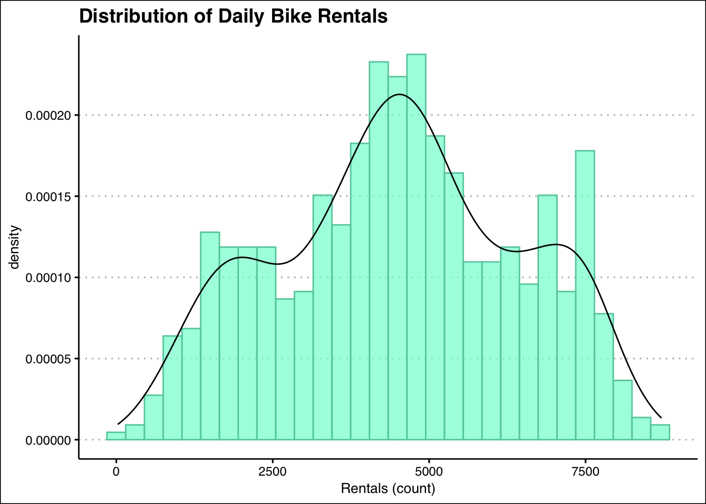
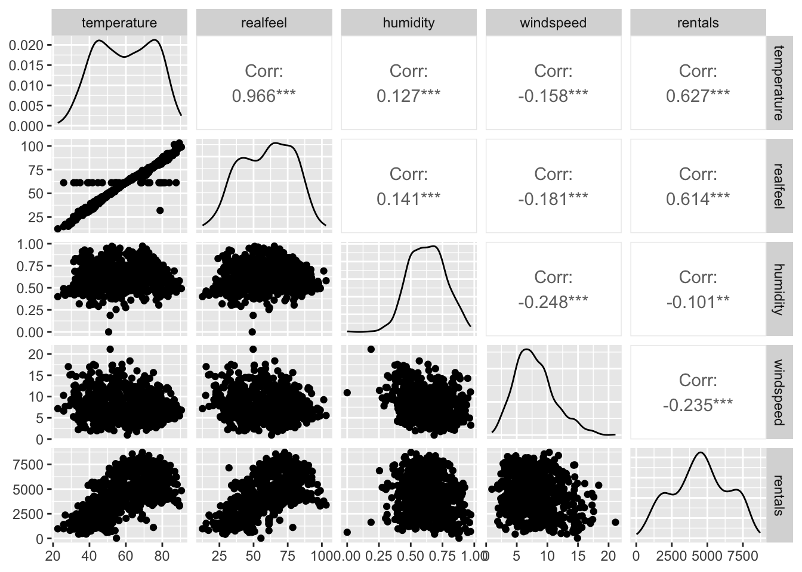
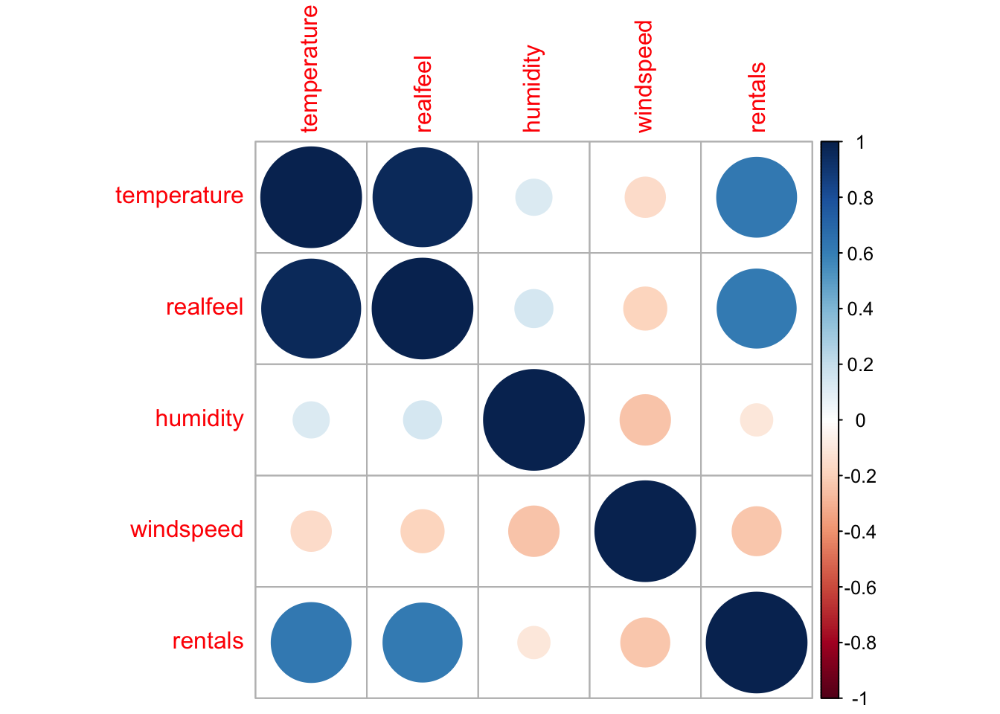
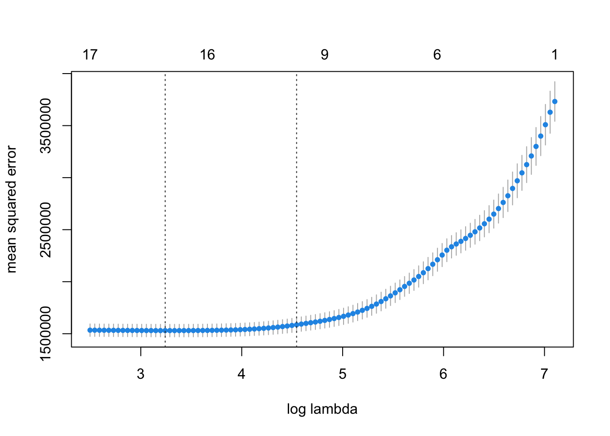
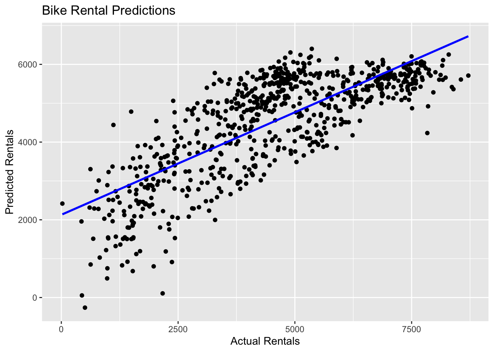

Rows: 731
Columns: 10
$ date <date> 2011-01-01, 2011-01-02, 2011-01-03, 2011-01-04, 2011-01-0…
$ season <dbl> 1, 1, 1, 1, 1, 1, 1, 1, 1, 1, 1, 1, 1, 1, 1, 1, 1, 1, 1, 1…
$ holiday <dbl> 0, 0, 0, 0, 0, 0, 0, 0, 0, 0, 0, 0, 0, 0, 0, 0, 1, 0, 0, 0…
$ weekday <dbl> 6, 0, 1, 2, 3, 4, 5, 6, 0, 1, 2, 3, 4, 5, 6, 0, 1, 2, 3, 4…
$ weather <dbl> 2, 2, 1, 1, 1, 1, 2, 2, 1, 1, 2, 1, 1, 1, 2, 1, 2, 2, 2, 2…
$ temperature <dbl> 46.71653, 48.35024, 34.21239, 34.52000, 36.80056, 34.88784…
$ realfeel <dbl> 46.39865, 45.22419, 25.70131, 28.40009, 30.43728, NA, 28.0…
$ humidity <dbl> 0.805833, 0.696087, 0.437273, 0.590435, 0.436957, 0.518261…
$ windspeed <dbl> 6.679665, 10.347140, 10.337565, 6.673420, 7.780994, 3.7287…
$ rentals <dbl> 985, 801, 1349, 1562, 1600, 1606, 1510, 959, 822, 1321, 12…Data Mining: Problem Set 2
Step 1
Step 2
When looking at our data that has been marked as numeric data types, there are a few variables that are not truly represented as numeric. These variables are season, holiday, weekday and weather. For example, the table below represents the numbers of observations for the variable season, for the total of observations within each month and season is shown. The numbers are better off added up to see the total observations within each category, not to compare the results and summmaries of each.
month
season 1 2 3 4 5 6 7 8 9 10 11 12
1 62 57 40 0 0 0 0 0 0 0 0 22
2 0 0 22 60 62 40 0 0 0 0 0 0
3 0 0 0 0 0 20 62 62 44 0 0 0
4 0 0 0 0 0 0 0 0 16 62 60 40From the table above, we can turn these variables into factors and get even more specific with season by specifying which season such as Winter, Spring, Summer and Fall is assigned to which number. I have assigned the seasons as, Winter = 1, Spring - 2, Summer = 3 and Fall = 4, for the table helps create the assumptions on which numbers would best fit with specific months and seasons. The variables of holiday, weekday and weather are currently numeric but better off represented as categorical data. These values represents a specific answer and are known as nominal data types. When it comes to holiday we can see that the numbers of 0 and 1 indicates that the data is either considered a holiday or not, so creating two groups for those numbers were easy to replace and specify. Now for weekday, changing the the numeric values into the days of the week such as: Sunday = 0, Monday = 1, Tuesday - 2, Wednesday = 3, Thursday = 4, Friday = 5 and Saturday = 6, will help indicate specific days that rentals took place throughout the week.
Step 3
Now that we’ve got everything properly recognized as numeric or factor, we can use summary() to look at some basic statistics and also scout out missing values. To make things easier to read, we’ll divide summaries by numeric and factor data types.
This data is showcasing our numeric values.
temperature realfeel humidity windspeed
Min. :22.60 Min. : 12.59 Min. :0.0000 Min. : 0.9322
1st Qu.:46.12 1st Qu.: 43.38 1st Qu.:0.5200 1st Qu.: 5.6182
Median :59.76 Median : 61.25 Median :0.6267 Median : 7.5343
Mean :59.51 Mean : 59.60 Mean :0.6279 Mean : 7.9303
3rd Qu.:73.05 3rd Qu.: 75.43 3rd Qu.:0.7302 3rd Qu.: 9.7092
Max. :90.50 Max. :103.10 Max. :0.9725 Max. :21.1266
NA's :27
rentals
Min. : 22
1st Qu.:3152
Median :4548
Mean :4504
3rd Qu.:5956
Max. :8714
This data is showcasing our factor values that we had just developed.
season holiday weekday weather
Winter:181 Yes:710 Sunday :105 1:463
Spring:184 No : 21 Monday :105 2:247
Summer:188 Tuesday :104 3: 21
Fall :178 Wednesday:104
Thursday :104
Friday :104
Saturday :105 For the realfeel variable in the set of numeric variables, we are missing 27 values. These missing values arr originally shown in our dataset as NA. We will impute those missing values, meaning we will fill in numbers in the blank spots.
Now, lets impute the missing values and compare to our original data.
Now we can compare the resulting distributions.
realfeel realfeel_orig
Min. : 12.59 Min. : 12.59
1st Qu.: 43.80 1st Qu.: 43.38
Median : 61.25 Median : 61.25
Mean : 59.66 Mean : 59.60
3rd Qu.: 74.98 3rd Qu.: 75.43
Max. :103.10 Max. :103.10
NA's :27 Looking at the above distributions, we see that realfeel doesn’t have any missing values and has the same median and a very similar mean. Nothing else has changed expect for the 1st and 3rd quartile values have shifted a bit.
Step 4
Rentals appears to encode the total numbers of bike rentals that occurred on a given date. This is count data. We can use both descriptive statistics as well as a histogram to get a visual of this data. Additionally, we can look at a picture of rentals over time to see if there is some trends or outliers present within our dataset.
rentals
Min. : 22
1st Qu.:3152
Median :4548
Mean :4504
3rd Qu.:5956
Max. :8714 The lowest recorded number is 22 rentals, and the highest recorded number is 8,714 rentals. Across the data the mean is about 4500 rentals and the median is only a little higher, meaning the model shouldn’t have a big skew and is fairly symmetric.

We can see that we don’t have a huge number of outliers and the distribution is not highly skewed in either direction. However, one thing to note is that it is a tri-model looking distribution. There are peaks in the data which suggest that there might be three different normal distributions over-lapping with one another.
Step 5
Many of the supervised learning algorithms can be helped or hurt by the relationships between features that will be used as predictors. We need to understand the distributions of each variable, looking for skew, outliers, and any other weirdness. This could involve histograms or boxplots of the variables. We can use scatter plots to look at relationships between predictors. For easier comparison we can also use correlation matrices to show statistically linear relationships.

First off we can see that temperature and realfeel has a strong and linear relationship. The correlation is 0.96. This could mean that one variable is a function of and associated with the other. Indeed, realfeel is a relationship between temperature and humidity and wind that is mean to incorporate what temperature it feels like to a human. In such a case, we will want to leave out a variable. Either realfeel or the other features that go into it.
The distribution plots do not look particularly alarming. And the scatterplots don’t show any other overwhelmingly strong relationships. What we can see, is that there is a positive and nonlinear relationship between temperature and rentals as well as temperature and realfeel. Warmer temperatures are associated with more rentals, but eventually, warm temperatures that result in weather that is too hot for comfort will lead to a decrease in rentals.
We can also check these correlations with corrplot.

We’re going to Z-score normalize the temperature feature. Our reason is mostly arbitrary, but one benefit is that after the transformation, the mean will be zero. Positive numbers will represent above average temperatures and negative below average ones.
temperature
Min. :-2.38324
1st Qu.:-0.86479
Median : 0.01611
Mean : 0.00000
3rd Qu.: 0.87425
Max. : 2.00098 We can min-max normalize the wind variable. This will take all values of the feature and cram it into the interval \([0, 1]\). It essentially puts a feature into a percent range.
A very important step, and a very common one required by many learning algorithms, is converting all categorical variables into dummy variables. This can be done many different ways in R. The dummy package does make it easier, however.
Before running the dummy() function we had 10 variables in the dataset. The result of the function is a new dataset with only the dummy variables generated from the factor variables in bikes. At this point we can replace the factor variables with the dummy ones.
Step 6
We’re going to perform a penalized form of regression known as LASSO to find a decent predictive model. We’ll need to do a few things first. We need to get rid variables we don’t intend to have as predictors. The date and realfeel features will be removed.
Normally, for a linear regression, you’d need to remove one dummy variable from a categorical variable. For example, season has 4 values (Winter, Spring, Fall, and Summer). We have dummy variable for each, but we need to omit one in order for it to work. But with LASSO, its okay and actually better to include them all and let the algorithm decide which to eliminate.

21 x 1 sparse Matrix of class "dgCMatrix"
seg84
intercept 7129.477106
temperature 973.652665
humidity -2908.777178
windspeed -1819.172215
season_Winter -718.644052
season_Spring -70.054566
season_Summer 8.026927
season_Fall 297.688661
holiday_Yes 404.154109
holiday_No .
weekday_Sunday -237.481119
weekday_Monday -78.567823
weekday_Tuesday .
weekday_Wednesday .
weekday_Thursday .
weekday_Friday .
weekday_Saturday 46.330329
weather_1 254.947013
weather_2 .
weather_3 -1627.856643
temperature2 -516.515981Step 7
Now we are going to create a visual representation that will compare our predicted rentals to our actual rentals over time.

We can see that the relationship of this distribution resulted in a weak positive and linear relationship. When interpreting our data, we can say that that our data is not to biased for there seems to be a pretty even variance from the regression line in the points in the model.
Step 8
The features present in our dataset all have a sense of importance when developing predictions. Each feature adds a layer of specification and helps us develop a more reliable model. As we attempt to balance out bias and variance, making sure we are covering all aspects to help us make predictions is a must. As features are shifted to fit the appropriate data types they represent, being able to specify information into our model is then open to use. We cn then incorporate appropriate useage of out data and get a more in-depth predition as our model continues to learn more.
Step 9
When it comes to training a model to the data I had prepared, it connects back to all the changes and developments we had made to the feautures and data types in our original dataset. We added new data types, excluded variables, filled in missing values, created dummy variables, and even simplified much of the data we had changed into factors As new things were discovered and parameters were adjusted, the model learned new things. The model was capable of approaching a proper prediction as it shifted and adapted. This training we did to our model led it away from its bias and helped balance out the model in both bias and variance, thus creating a more dependable, yet not perfect, model for prediction.
Step 10
I feel as if creating dummy variables out of the features we had changed into factors were necessary for this prediction model. These numbers needed to represent the nominal data that they were intentionally marked down for and not used the same way as all of the numeric values present in the dataset. Specifiying these features that were changed into facors were also a big step in gettting more in-depth with our dataset as well. Filling in missing values for realfeel was a step that was I thought was not strictly required for our dataset for we decided that realfeel was a feauture to not use as a predictor. Though I do think it is important to include this step when dealing with other possible datasets. We imputed the median of realfeel into the spots of each missing value. If we would have thrown these 27 observations out, we could have possibly thrown out some important information, thus imputing these missing values allowed us to maintain this data and allowed us to take another step towards specification. Each model we had created regarding relationships, distributions, and even just overall summaries of our features within our datasets all helped us determine which data to include or to not include. Each step had an importance as we learn how to properly train and test our data.